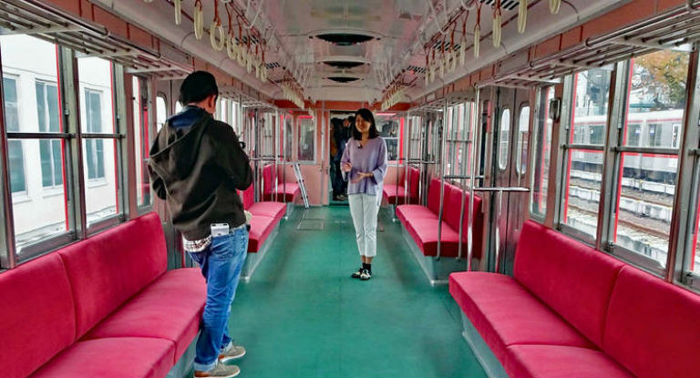
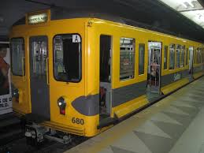
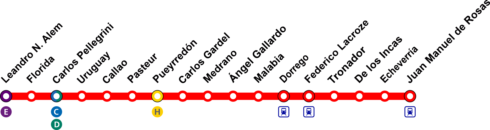
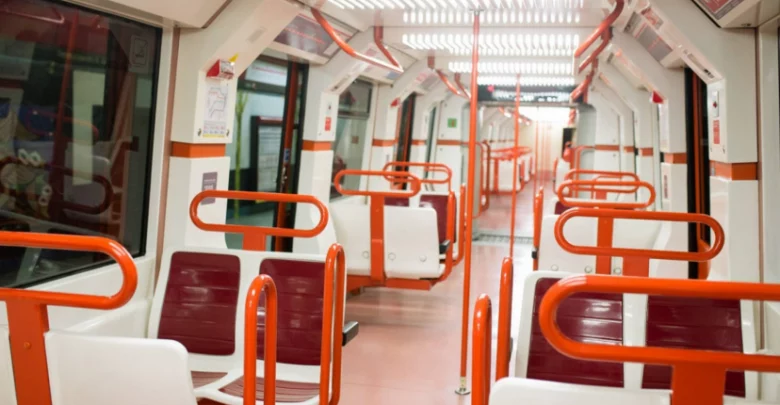

Subte Línea B
La Línea B conecta la Estación Federico Lacroze con el corazón del microcentro porteño, recorriendo la Avenida Corrientes en apenas minutos.
Los "Viejos de Japón"

Durante décadas, la Línea B fue operada por los emblemáticos coches japoneses fabricados por Tokyu Car Corporation, adquiridos en los años 60 y 70. El apodo "viejos de Japón" se volvió parte del folklore porteño.
Estos vagones de acero inoxidable se destacaban por su robustez y longevidad, brindando servicio durante más de 40 años. Sus asientos de madera y sus sonidos característicos quedaron grabados en la memoria colectiva de miles de pasajeros.
En 2013 comenzó su retiro progresivo con la llegada de los nuevos trenes CAF, cerrando una era icónica en la historia del subterráneo de Buenos Aires.

El Recorrido

La Línea B recorre 11,4 km a través de 17 estaciones, uniendo la cabecera en Federico Lacroze (Chacarita) con Leandro N. Alem en el microcentro, siguiendo el trayecto de la Avenida Corrientes.
Las estaciones intermedias más importantes son Medrano, Pueyrredón, Callao y Uruguay, con combinaciones con otras líneas de subte en Carlos Gardel (Línea A) y Pasteur. El viaje completo de punta a punta dura aproximadamente 23 minutos.
Los Nuevos Vagones

A partir de 2013, la Línea B incorporó los modernos trenes CAF Serie 6000, fabricados por la empresa española Construcciones y Auxiliar de Ferrocarriles. Estos reemplazaron definitivamente a los históricos coches japoneses.
Los nuevos vagones cuentan con aire acondicionado, pantallas de información al pasajero, iluminación LED, sistema de apertura y cierre automático de puertas, y mayor capacidad de transporte. También incorporan espacios reservados para personas con movilidad reducida.
Los trenes CAF permiten una frecuencia más alta y un servicio más confiable, mejorando notablemente la experiencia de los más de 200.000 pasajeros que utiliza la línea cada día.
Formas de Pago
Para acceder al servicio de la Línea B podés abonar el boleto utilizando los siguientes medios:
- SUBE Tarjeta de transporte público recargable, válida en toda la red de subtes, trenes y colectivos del AMBA.
- SUBE Digital Disponible desde la app oficial del Gobierno. Funciona a través de NFC en celulares compatibles.
- Tarjeta de crédito / débito Contactless directamente en el molinete, sin necesidad de tarjeta SUBE física.
- Tarjeta prepaga Tarjetas como Mercado Pago o Ualá con tecnología NFC habilitadas para transporte público.